L'alternativa a Excel per monitorare il patrimonio netto.
Se tieni i tuoi soldi su Excel o Google Sheets conosci già il problema: prezzi non aggiornati, copia-incolla manuale dalle app del broker ogni mese, formule fragili, nessun valore degli immobili, zero privacy. Holdings fa il lavoro al posto tuo — e, a differenza della maggior parte delle app, non richiede l'accesso alla banca.
Prezzi che si aggiornano da soli
Ogni azione, ETF, obbligazione e crypto è tracciata in tempo reale da Yahoo Finance. I tassi di cambio seguono automaticamente la tua valuta. Niente copia-incolla dalle app del broker, niente celle ferme.
La tua banca resta fuori
A differenza di Mint, Empower o Monarch, Holdings non chiede mai le credenziali bancarie e non usa aggregatori come Plaid. Aggiungi ciò che vuoi monitorare; nulla viene mai collegato ai tuoi conti.
Valutati come dal notaio
Immobili italiani valutati dai dati OMI pubblicati dall'Agenzia delle Entrate, per comune e zona. Case in USA, Germania e Spagna stimate dagli indici ufficiali dei prezzi delle abitazioni. Dati di mercato reali, non una stima a occhio.
Guardala su Mac, iPad e iPhone.
Un'unica vista privata di tutto ciò che possiedi, sincronizzata tra i tuoi dispositivi Apple.
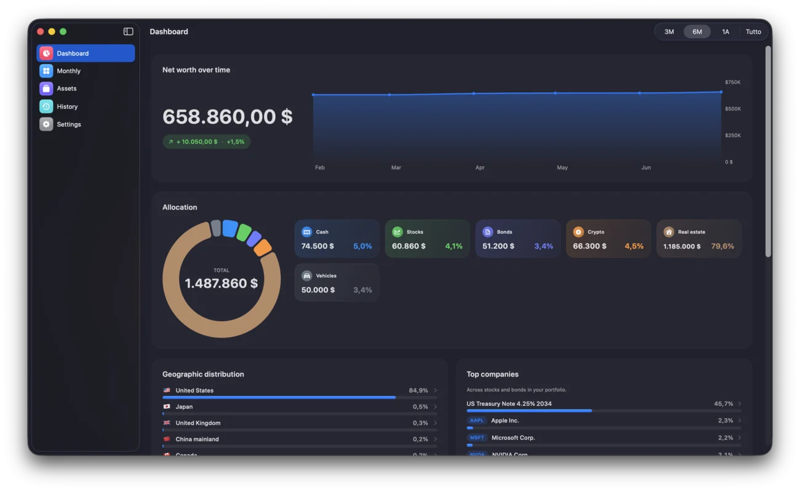
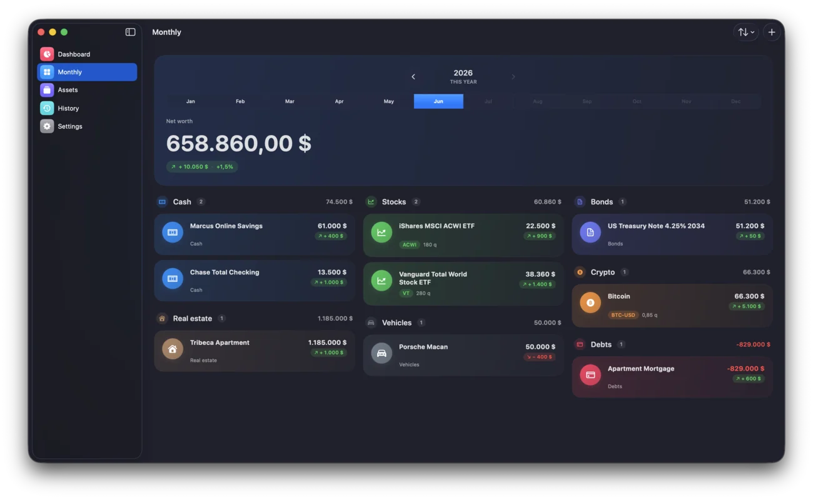
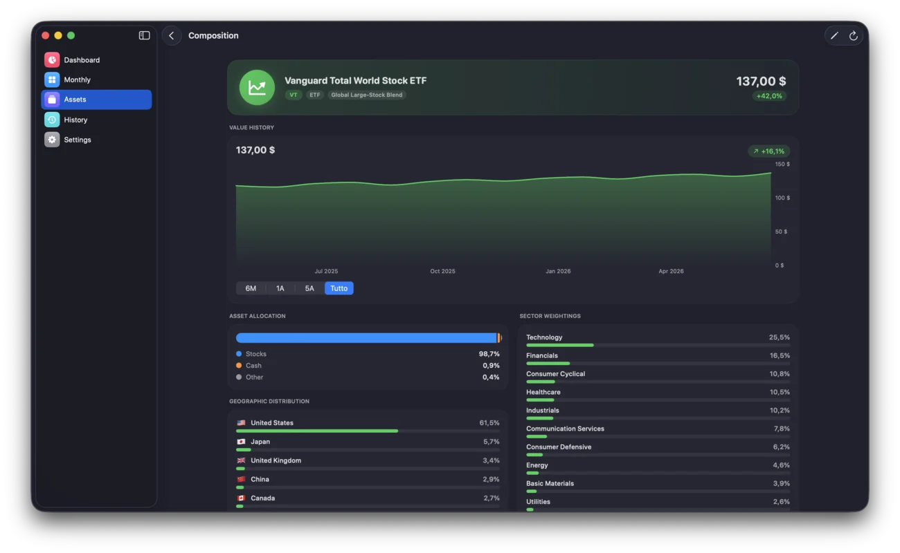
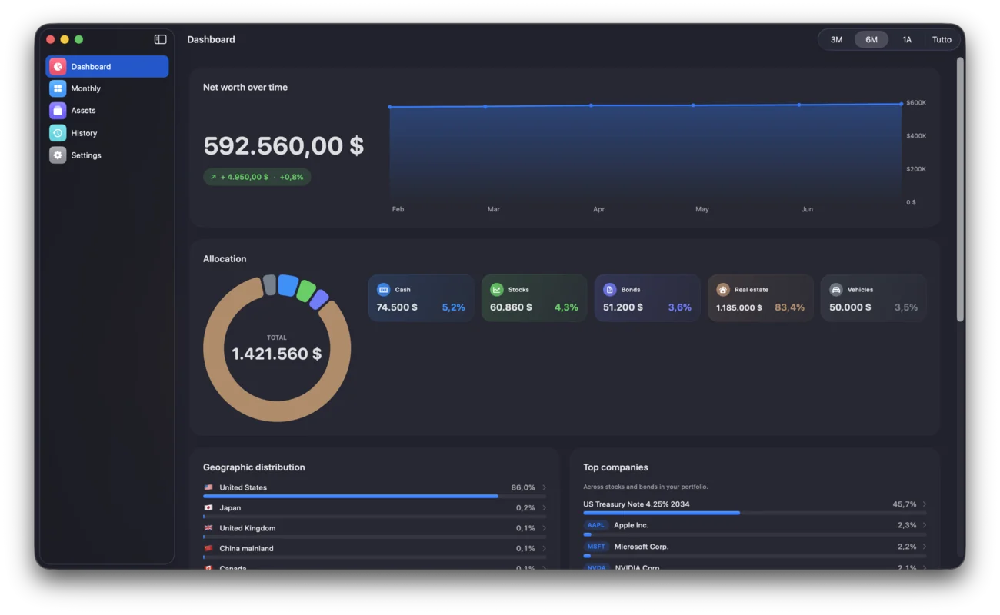
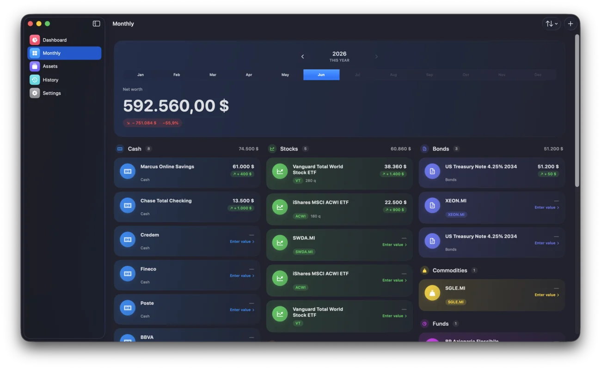
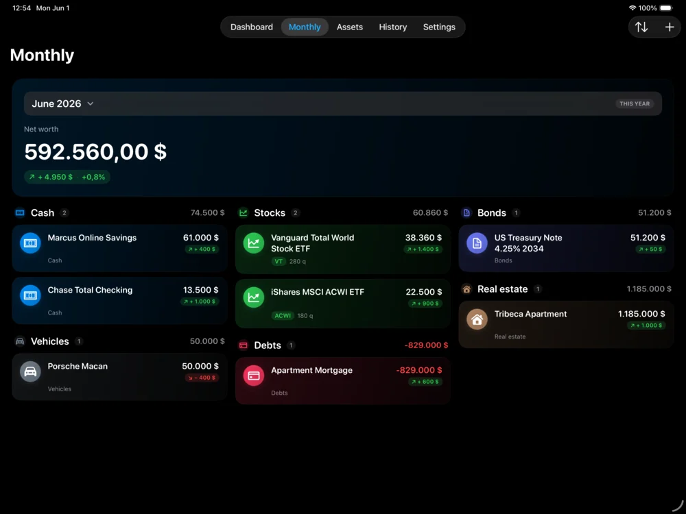
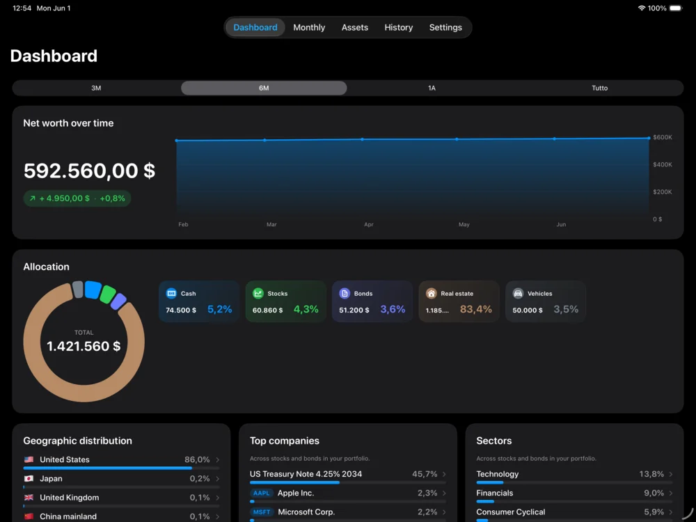
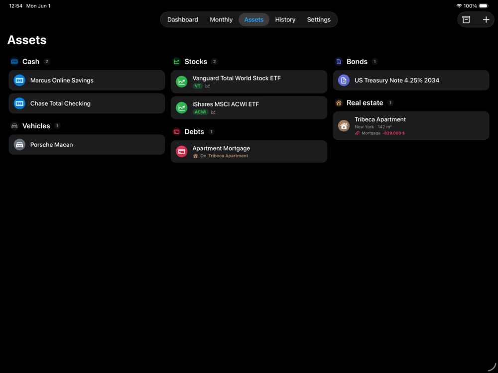
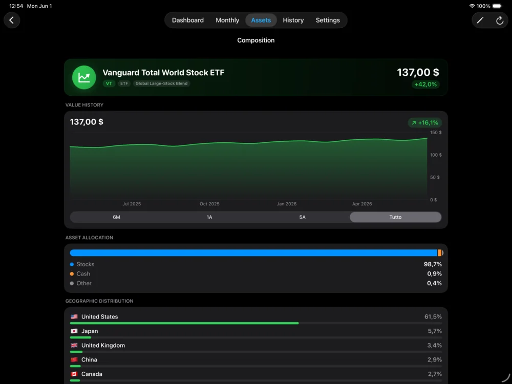
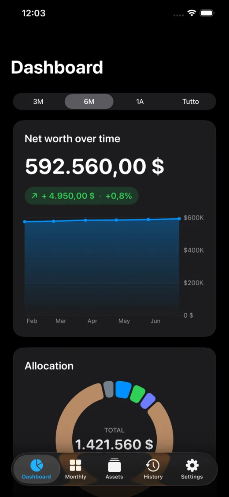
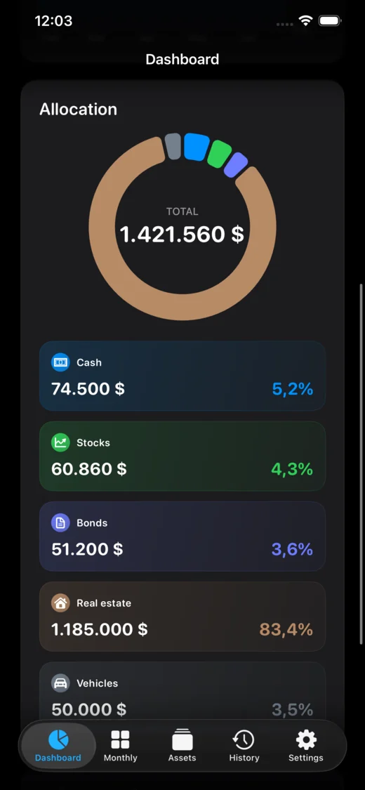
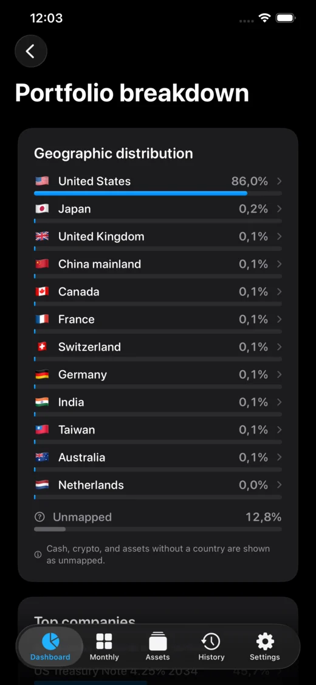
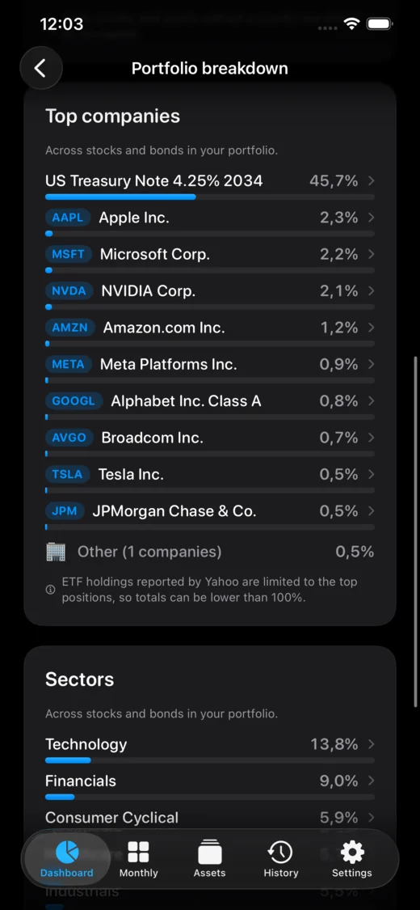
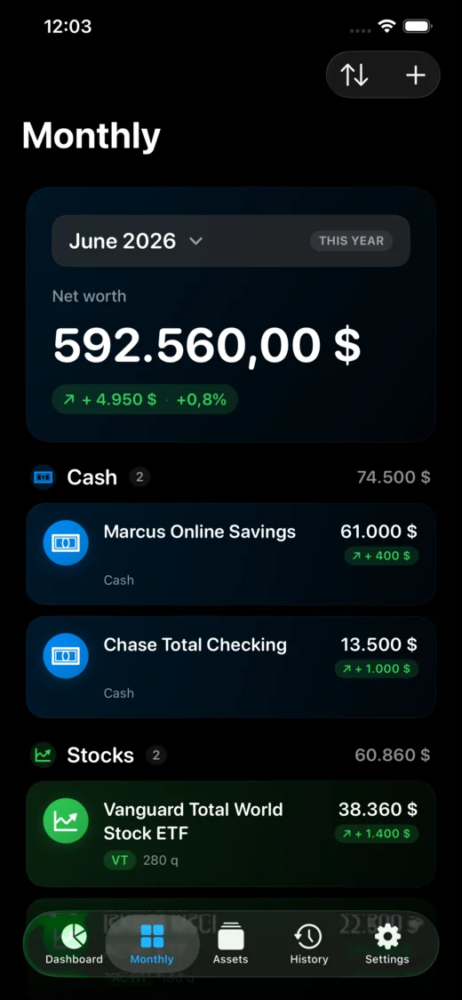
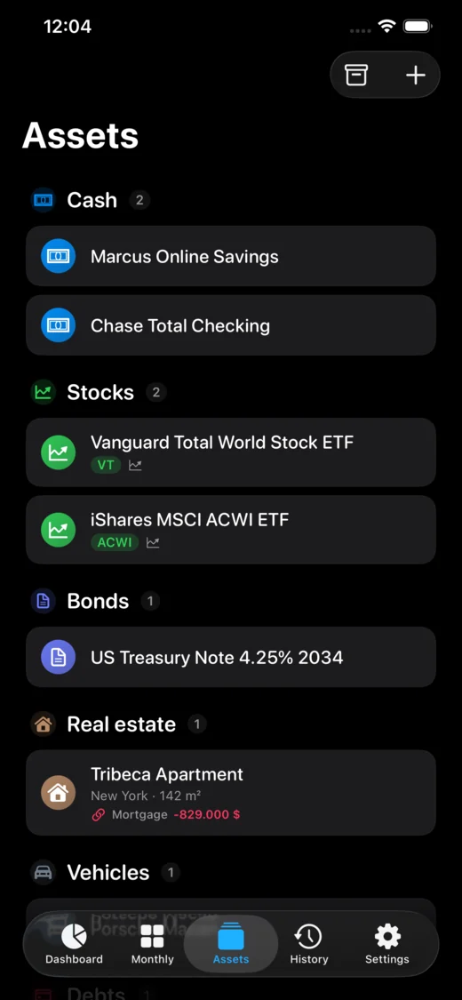
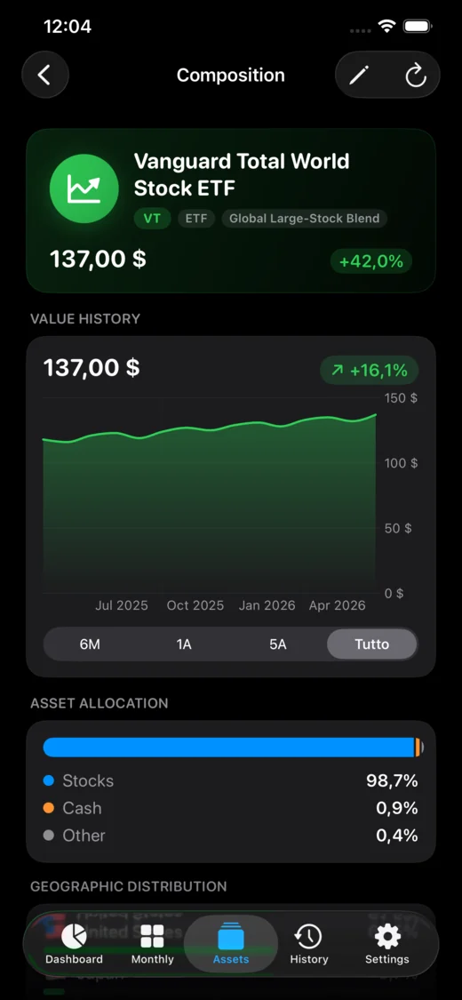
Dashboard del patrimonio su Mac · Ogni conto, investimento, immobile e debito su iPad · Il tuo portafoglio su iPhone — tutto sincronizzato in privato tramite iCloud.
Cosa monitora Holdings
Investimenti
Azioni, ETF, obbligazioni, crypto — prezzi in tempo reale da Yahoo Finance, classificati automaticamente per quoteType e categoria Morningstar.
Liquidità e depositi
Conti correnti, risparmio, depositi vincolati in qualsiasi valuta. I totali sono riconciliati nella tua valuta con tassi di cambio aggiornati.
Immobili
Immobili con valutazioni OMI per l'Italia e stime basate su HPI per USA, Germania e Spagna. Monitora più case in Paesi diversi.
Veicoli
Auto, moto e altri beni intestati. Registra il valore nel tempo e osserva la svalutazione rispetto al resto del patrimonio.
Mutui e debiti
Collega un mutuo al suo immobile così il patrimonio netto riflette la leva. I mutui a tasso variabile ricevono un promemoria automatico di revisione.
Quote societarie e previdenza
Partecipazioni in società private, fondi pensione, TFR — categorizzati a parte, così previdenza e ricchezza illiquida restano visibili.
Multivaluta
Oltre dodici valute di visualizzazione. Ogni asset mantiene la valuta nativa; i totali convertono ai tassi correnti con aggiornamento manuale.
Crescita e storico
Storico mensile con grafici, ripartizioni per categoria e una dashboard di crescita con rendimento a 12 mesi e CAGR storico.
Privacy
Privato per scelta — e per architettura.
Non esiste un account Holdings. Non esiste un backend Holdings. Il tuo patrimonio vive dentro l'iCloud crittografato del tuo Apple ID, dove solo tu e i tuoi dispositivi potete leggerlo. Non possiamo vedere i tuoi dati, perché non li abbiamo.
Il tuo iCloud, i tuoi dati
Tutto è archiviato nel tuo container iCloud privato tramite CloudKit di Apple. La sincronizzazione tra Mac, iPad e iPhone avviene direttamente — senza di noi nel mezzo.
Nessun server, nessun account
Nessun login, nessuna registrazione, nessuna email. Non abbiamo un database con i tuoi saldi o i tuoi ticker. Non c'è nulla che noi — o chiunque altro — possa violare.
Crittografato end-to-end da Apple
I dati CloudKit sono crittografati in transito e a riposo, con chiavi legate al tuo Apple ID. Nemmeno gli operatori di Apple possono leggerli. Né possiamo noi.
Niente pubblicità, niente data broker
Nessun identificatore pubblicitario. Nessun SDK di terze parti che rivende i tuoi dati. Analytics anonimi registrano le schermate aperte e i conteggi degli eventi — mai valori, ticker o chi sei.
Prezzi
Gratis
Tutto il monitoraggio essenziale
Traccia asset illimitati in tutte le categorie con prezzi live, conversione FX, dashboard di crescita e storico mensile. Nessun account richiesto.
Pro
19,99 € · acquisto singolo
In condivisione con la famiglia
Sblocca ripartizione geografica, valutazioni immobiliari, obiettivi di patrimonio ed esportazione PDF. Nessun abbonamento, mai.
Come iniziare
- Scarica Holdings su Mac, iPad o iPhone
- Aggiungi il primo asset — liquidità, un ticker, un immobile o un veicolo
- Holdings recupera automaticamente prezzi live, tassi di cambio e valutazioni immobiliari
- Vedi tutto il tuo patrimonio netto in un'unica vista, sincronizzata in privato tra i tuoi dispositivi Apple
Domande frequenti
Qual è il modo migliore per monitorare il patrimonio netto senza Excel?
Usa un'app dedicata al patrimonio netto invece di Excel o Google Sheets. Holdings mantiene un totale aggiornato di ogni asset — investimenti, liquidità, immobili, veicoli e debiti — recuperando prezzi e tassi di cambio in automatico, quindi niente formule da mantenere e niente copia-incolla mensile. Valuta anche gli immobili da dati ufficiali, cosa che un foglio di calcolo non può fare, e tiene tutto privato nel tuo iCloud.
Devo collegare il conto in banca?
No. Holdings non chiede mai le credenziali bancarie e non usa servizi di aggregazione come Plaid. A differenza di Mint, Empower o Monarch, nulla è collegato alla tua banca. Aggiungi gli asset che vuoi monitorare, e i prezzi live arrivano solo da dati di mercato pubblici (Yahoo Finance) e indici immobiliari ufficiali.
Come vengono valutati gli immobili in Italia?
Dai dati OMI pubblicati dall'Agenzia delle Entrate: Holdings cerca il valore al metro quadro per comune, zona e tipologia, e lo applica alla superficie del tuo immobile. Per USA, Germania e Spagna usa gli indici ufficiali dei prezzi delle abitazioni (Eurostat e FRED).
Dove vengono archiviati i miei dati?
Sul tuo dispositivo e nel tuo container iCloud privato — mai sui nostri server. Holdings non ha account utente, né database backend, né archiviazione di terze parti. CloudKit gestisce la sincronizzazione, crittografata in transito e a riposo da Apple.
Holdings è gratis?
Sì — tutto il monitoraggio essenziale è gratis, inclusa la dashboard di crescita. Holdings Pro è un acquisto singolo da 19,99 € che sblocca ripartizione geografica, valutazioni immobiliari, obiettivi di patrimonio ed esportazione PDF. Nessun abbonamento.
Su quali dispositivi funziona Holdings?
Mac (macOS 15.6 o successivo), iPad (iPadOS 18.6 o successivo) e iPhone (iOS 18.6 o successivo). Un solo acquisto copre tutti e tre, con la condivisione in famiglia supportata.